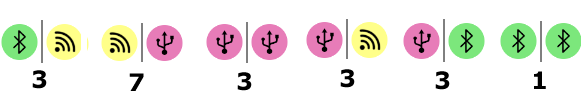
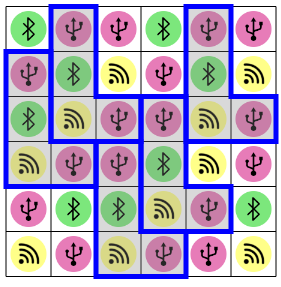
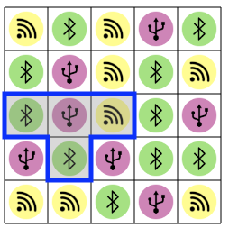
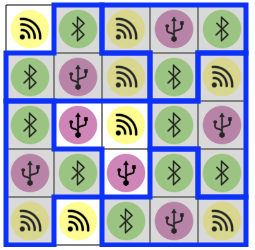

Toistuvat hahmot
Aseta annetut sinistä hahmoa ruudukkoon.
Jokaisen hahmon pitää peittää samanlaiset ruudut.
Tässä versiossa hahmoja saa kääntää ja asettaa ruudukkoon (myös keskenään) erilaisissa asennoissa.
Aseta annetut sinistä hahmoa ruudukkoon.
Jokaisen hahmon pitää peittää samanlaiset ruudut.
Tässä versiossa hahmoja saa kääntää ja asettaa ruudukkoon (myös keskenään) erilaisissa asennoissa.
Tehtävää voi lähestyä esimerkiksi seuraavasti:
Voimme ensimmäisen lähestymistavan mukaisesti kokeilla asettaa ensimmäistä hahmoa jokaiseen mahdolliseen kohtaan vasemmalta oikealle edeten. Jo järjestyksessä toinen kohta johtaa ratkaisuun:

Tehtävässä voisi myös soveltaa toista lähestymistapaan esimerkiksi tekemällä havainnon, että ainoastaan keltainen ruutu esiintyy alarivillä vähintään neljä kertaa. Ja heti perään voimme havaita, että neljän keltaisen ruudun yläpuolella on violetti ruutu (ja muita keltaisten ruutujen yläpuolisia värejä on vähemmän). Koska hahmoja on neljä, on ne pakko asettaa kattamaan nämä neljä edellä havaittua kohtaa.
Käytetään toista lähestymistapaa. Voimme esimerkiksi havaita, että kun hahmon asettaa ruudukkoon, on sen kahdesta ruudusta koostuva alarivi ruudukossa alla punaisella suorakulmiolla rajatulla alueella.

Keskitytään nyt etsimään rajatulta alueelta keskenään samanlaisia kahden vierekkäisen ruudun kohtia. Alla on esitetty kunkin erilaisen kahden vierekkäisen ruudun yhdistelmän esiintymien lukumäärät. Meillä on 5 hahmoa, ja voimme huomata että ainoa vähintään 5 kertaa toistuva kahden ruudun yhdistelmä on keltainen-violetti.
Kukin hahmo pitää selvästi asettaa sellaiseen kohtaan, jossa sen alarivi peittää keltaisen ja violetin ruudun. Erilaisia mahdollisuuksia asetella hahmot näin on sen verran pieni määrä, että seuraava ratkaisu on helppo löytää kokeilemalla:
Käytetään toista lähestymistapaa. Aivan aluksi voimme havaita, että koska hahmo peittää 4 ruutua ja ruudukossa on 3 erilaista ruutua, on hahmon pakko peittää vähintään kaksi keskenään samanlaista ruutua. Näin ollen 5 hahmoa peittää yhteensä vähintään 10 keskenään samanlaista ruutua. Ruudukossa on 10 vihreää, 7 violettia ja 8 keltaista ruutua, joten voimme suoraan päätellä, että kunkin hahmon on peitettävä täsmälleen 2 vihreää ruutua. Toisaalta voimme lisäksi päätellä, että kunkin hahmon on lisäksi peitettävä 1 violetti ja 1 keltainen ruutu (koska se ei voi ruutujen lukumäärien vuoksi peittää 2 violettia tai 2 keltaista ruutua).
Siirrytään seuraavaksi pohtimaan sitä, minkä värisen ruudun kunkin hahmon "keskikohdan" tulee peittää.
Yhteenvetona tiedämme nyt, että kunkin hahmon keskikohta peittää violetin ruudun, ja hahmon kolme "sakaraa" peittävät kaksi vihreää ja yhden keltaisen ruudun. Näiden pohjatietojen ansiosta meidän tarvitsee kokeilla vain kohtalaisen pientä määrää erilaisia mahdollisia tapoja asetella hahmot ruudukkoon.
Ensimmäinen yritys voisi mahdollisesti jäädä heti umpikujaan: kuvan tilanteessa ensimmäisen asetetun hahmon jälkeen ei voi asettaa enää toista hahmoa.
Myöhempi yritys voisi mahdollisesti onnistua asettamaan 4 hahmoa, ja jäädä sitten jumiin.

Kokeilemalla systemaattisesti erilaisia vaihtoehtoja voimme kuitenkin löytää toimivan ratkaisun:
Hyvin monet tietojenkäsittelyn ongelmat voi ainakin periaatteessa ratkaista nimellä täydellinen haku tunnetulla ratkaisumenetelmällä, joka pohjautuu jokaisen mahdollisen ratkaisuehdokkaan kokeilemiseen. Menetelmä on sinänsä melko yleispätevä, mutta yleensä varsin paljon aikaa vievä, jos erilaisia kokeiltavia ratkaisuehdotuksia on paljon. Täydellistä hakua pyritäänkin usein nopeuttamaan etsimällä ongelmasta jotain sellaisia rajoitteita, joiden avulla erilaisten kokeiltavien ratkaisumahdollisuuksien määrää voidaan jo lähtökohtaisesti karsia pienemmäksi.
Tämän tehtävän esimerkkiratkaisut sovelsivat pohjimmiltaan täydellistä hakua, jossa kokeiltavien asettelutapojen määrää oli pyritty karsimaan rajoittamalla hahmojen asettelu koskemaan vain tietyt ehdot täyttäviä ruudukon kohtia.
Katso lisää esim. https://en.wikipedia.org/wiki/Brute-force_search (englanniksi).